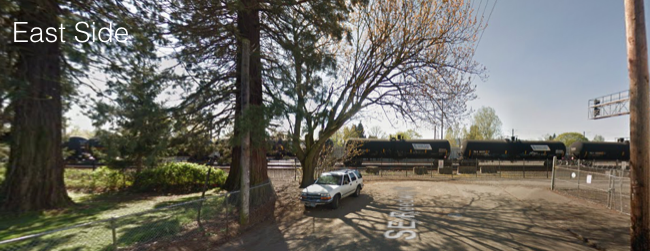

What is this project?
Reedway Overcrossing would be a new bike and pedestrian bridge that crosses over McLoughlin and the Brooklyn Railyard, from Reedway and 23rd to 26th and Reedway (see map to the right and street view images below). This project would fill a critical east-west connectivity gap while providing a family-friendly biking and walking route that would be much safer than existing bridges at Holgate and Bybee.
Along with Southeast Uplift, the neighborhoods of Brooklyn, Creston-Kenilworth, Eastmoreland, Sellwood-Moreland and Woodstock are all working together to request that Portland build this project. The bridge is part of the Portland Transportation System Plan (project #70049), but it currently has no design and only a rough (1-10 year) timeline.


Why is this bridge needed?

As the map of connectivity gaps at the left shows, Reedway Overcrossing would solve one of the worst connectivity problems in the entire city (see the map of at left), There is no way across the Union Pacific Railroad in the 1.1-mile stretch between Holgate and Bybee Boulevards, despite a plentitude of destinations in the area including Reed College, Crystal Springs Rhododendron Garden, Oaks Bottom Wildlife Refuge, hundreds of family wage jobs in the Brooklyn Industrial Area and thousands of homes and apartments in the Westmoreland, Brooklyn, Reed and Eastmoreland neighborhoods. This poor connectivity results in lengthy, out-of-direction travel and encourages driving instead of walking and biking. For example, a resident of the new apartment building at 22nd & Reedway must travel 1.7 miles to reach a job at industrial employer Wayne-Dalton on 26th Avenue. With Reedway Overcrossing, that person could walk a quarter mile to work.
How would the bridge get funded?
Construction of this bridge could be partially or fully funded using Transportation System Developement Charges (TSDCs). These are fees that are paid by developers when they build a new project, and they are designed to serve the area in which the project occurs.
You have probably noticed that our neighborhoods are currently experiencing rapid and intense development. In northern Westmoreland alone, over 400 apartments are recently completed, under construction or proposed in the immediate vicinity of the overcrossing. Another 900 apartments are proposed further south in Sellwood-Moreland and to the north in Brooklyn, while Reed and Eastmoreland neighborhoods are experiencing significant infill development. Reed College has constructed new dorms for 125 students at the northwest corner of its campus, a quarter mile from the overcrossing site. Union Pacific and other industrial employers are at full employment. All of this growth translates into travel demand. The TSDCs paid by developers for all this growth could help fund this important connection, ensuring that new and existing residents can choose biking and walking trips instead of adding to our congested streets.
If you'd like to see this project get funded with fees paid by developers, please consider saying so by taking Portland's TSDC survey. This survey will be used to help decide which projects to priortize.
Portland TSDC Survey